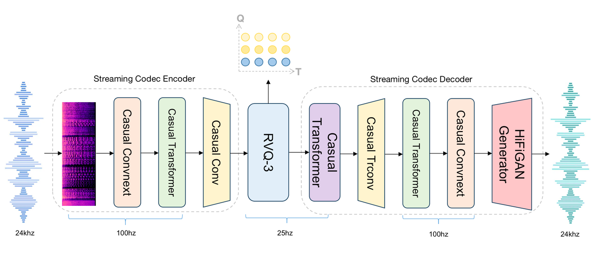
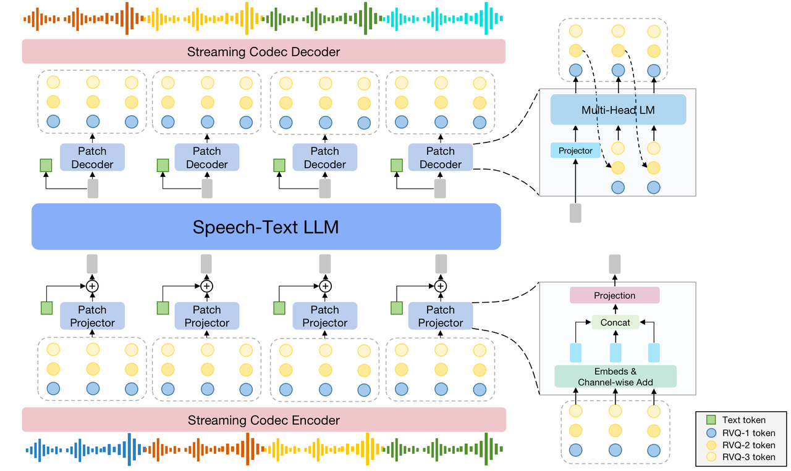

SpeechGPT 2.0-preview 是我们在迈向情景智能推出的第一个拟人化实时交互系统，是在百万小时级语音数据上训练的端到端语音大模型。
SpeechGPT 2.0-preview 是我们在迈向情景智能推出的第一个拟人化实时交互系统。作为在百万小时级语音数据上训练的端到端语音大模型，它具有拟人口语化表达与百毫秒级低延迟响应，支持自然流畅的实时打断交互。SpeechGPT 2.0-preview 较好的对齐了语音和文本两个模态：一方面展现出了一定的风格泛化能力，能够遵循用户指令，实现多情感、多风格、多音色的控制与智能切换；拥有不错的角色扮演能力，能够模拟各类角色的语气和情感状态；它还具备多种语音才艺，能够进行诗歌朗诵、故事讲述、说方言等；另一方面，它在具备语音表现力的同时有不错的智商与文本能力，从而具备支持工具调用、联网搜索、外挂知识库等功能的能力。SpeechGPT 2.0-preview 目前只在中文语音数据上做了训练，没有混英文语音数据训练，因此目前模型还没有英文对话能力。
我们已开源了SpeechGPT 2.0-preview的推理代码，模型权重以及简要的方法介绍，在 https://github.com/OpenMOSS/SpeechGPT-2.0-preview
欢迎在线体验我们的Demo系统。
SpeechGPT 2.0-preview 是端到端语音对话大模型。基于我们在端到端语音对话方向上的认知与技术积累，在开发过程中，我们自研了语义-声学联合建模的超低比特率流式语音Codec；我们构建了高效的语音数据爬取系统，多功能高效率语音数据清洗pipeline和全方面多粒度语音数据标注系统，积累了百万小时级的真实语音数据，并完成了精细标注；我们开发了具有高度口语化和极强音色克隆能力的对话语音合成系统，并基于此合成了数十万小时的多角色多风格语音对话数据；我们提出了一种新的语音文本混合建模模型架构以及多阶段语音文本混合建模训练流程，来兼顾文本能力与语音能力，避免模型在学习语音能力时候降低智商，能够丝滑替代各类框架下的文本模型，从而可以支持工具调用、联网搜索、外挂知识库等功能。通过端到端的方式建模语音对话，SpeechGPT 2.0-preview 在实际测试中实现了200ms以内的延迟，能够为用户提供流畅的实时交互体验。
在实验过程中，我们也观察到了很多有意思的现象和结论：比如通过充分的语音文本对齐预训练，我们发现模型可以"涌现"出语音风格的泛化性，比如没有用语速调整的对话数据训练就可以做到语速控制，比如可以扮演对话数据中从未见过的角色与风格的语气等；语音数据合成引擎的质量是提升端到端语音模型的各训练阶段能力的关键。


SpeechGPT 2.0-preview在模型稳定性以及音质稳定性上还需要进一步的加强，我们正在进行双工模型的训练以及系统搭建，结合RLHF来增强模型表现力与稳定性以及进一步扩增语音数据量以及扩展到更多的语言，请期待下一版本的更新。
Hanfu Chen, Ke Chen, Qinyuan Cheng, Mingshu Chen, Ruifan Deng, Liwei Fan, Zhaoye Fei, QingHui Gao, Yitian Gong, Ching Wing Kwok, Kexin Huang, Yaozhou Jiang, Xingyu Lu, Shimin Li, Zhengyuan Lin, Ruixiao Li, Qian Tu, Jin Wang, Yang Wang, Siyin Wang, Zhe Xu, Chenchen Yang, Donghua Yu, Yuqian Yao, Yucheng Yuan, Chufan Yu, Dong Zhang, YiWei Zhao, Yuqian Zhang, Jun Zhan, Xin Zhang, Xingjian Zhao, Chengyang Zhu